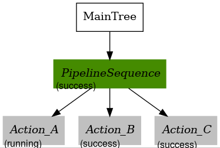
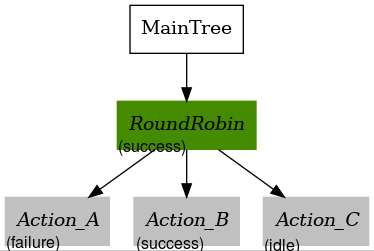

Creating a Custom Behavior Tree¶
Overview¶
This document serves as a reference guide to the main behavior tree (BT) used in Nav2, and explains the process for customizing this BT.
There are many example behavior trees provided in nav2_bt_navigator/behavior_trees,
but these sometimes have to be re-configured based on the application of the robot.
The following tutorial will walk through the current main default BT navigate_w_replanning_and_recovery.xml
and will show users how to modify this BT in potentially useful ways, using the example of developing a BT that follows a predefined path.
Prerequisites¶
Have a valid installation of Nav2 (see the getting started guide)
Have a robot (simulated, or physical) that can be used for testing that can already navigate with Nav2
- Become familiar with the concept of a behavior tree before continuing with this tutorial
Read the short explaination in navigation concepts
Read the general tutorial ang guide (not Nav2 specific) on the BehaviorTree CPP V3 website. Specifically, the “Learn the Basics” section on the BehaviorTree CPP V3 website explains the basic generic nodes that will be used that this guide will build upon
Introduction To Nav2 Specific Nodes¶
Warning
- Vocabulary can be a large point of confusion here when first starting out.
A
Nodewhen discussing BT is entirely diferent than aNodein the ROS2 contextA
Recoveryin the context of BT is different than a navigationRecoverybehaviorAn
ActionNodein the context of BT is not necessarily connected to an Action Server in the ROS2 context (but often it is)
There are quite a few custom Nav2 BT nodes that are provided to be used in the Nav2 specific fashion. Some commonly used Nav2 nodes will be described below. The full list of custom BT nodes can be found in the nav2_behavior_tree plugins folder. The configuration guide can also be quite useful.
Action Nodes¶
ComputePathToPose - ComputePathToPose Action Server Client (Planner Interface)
FollowPath - FollowPath Action Server Client (Controller Interface)
Spin, Wait, Backup - Recoveries Action Server Client (System Recoveries)
ClearCostmapService - ClearCostmapService Server Clients (Contextual Recovery)
The above Action Nodes are all action server clients to their respective action server that will call their action on the first tick of the action node.
Upon completion, these action nodes will return SUCCESS if the action server believes the action has been completed correctly, RUNNING when still running, and will return FAILURE otherwise. Note that in the above list,
the ClearCostmapSerice action node is not an action server client, but a service client.
Condition Nodes¶
GoalUpdated
GoalReached
InitialPoseReceived
isBatteryLow
The above list of condition nodes can be used to probe particular aspects of the robot, or the navigation status. They will return SUCCESS is TRUE and FAILURE when FALSE typically.
The key condition that is used in the default Nav2 BT is GoalUpdated which is checked asynchronously at times. This condition node allows for the behavior described as “If the goal has updated, then we must replan”.
Condition nodes are typically paired with ReactiveFallback nodes.
Decorator: Rate Controller¶
The rate controller node helps control the ticking of it’s children nodes. The tick rate is an exposed blackboard parameter, it is being used in the default Nav2 BT to limit the rate at which the ComputePathToPose action node is called.
Control: PipelineSequence¶
The PipelineSequence control node re-ticks previous children when a child returns RUNNING.
This node is similar to the Sequence node, with the additional property that the children prior to the “current” are reticked, (resembling the flow of water in a pipe).
If at any point a child returns FAILURE, all children will be halted and the parent node will also return SUCCESS. Upon SUCCESS of the last node in the sequence, this node will halt and return SUCCESS.
To explain this further, here is an example BT that uses PipelineSequence.

<root main_tree_to_execute="MainTree">
<BehaviorTree ID="MainTree">
<PipelineSequence>
<Action_A/>
<Action_B/>
<Action_C/>
</PipelineSequence>
</BehaviorTree>
</root>
Action_A,Action_B, andAction_Care all IDLE.When the parent PipelineSequence is first ticked, let’s assume
Action_AreturnsRUNNING. The parent node will now returnRUNNINGand no other nodes are ticked.

Now, let’s assume
Action_AreturnsSUCCESS,Action_Bwill now get ticked and will returnRUNNING.Action_Chas not yet been ticked so will returnIDLE.

Action_Agets ticked again and returnsRUNNING, andAction_Bgets re-ticked and returnsSUCCESSand therefore the BT goes on to tickAction_Cfor the first time. Let’s assumeAction_CreturnsRUNNING. The retick-ing ofAction_Ais what makes PipelineSequence useful.

All actions in the sequence will be re-ticked. Let’s assume
Action_Astill returnsRUNNING, where asAction_BreturnsSUCCESSagain, andAction_Cnow returnsSUCCESSon this tick.The sequence is now complete, and thereforeAction_Ais halted, even though it was stillRUNNING.

Recall that if Action_A, Action_B, or Action_C returned FAILURE at any point of time, the parent would have returned FAILURE and halted any children as well.
Control: Recovery¶
The Recovery control node has only two children and returns SUCCESS if and only if the first child returns SUCCESS.
If the first child returns FAILURE, the second child will be ticked. This loop will continue until either:
The first child returns
SUCCESS(which results inSUCCESSof the parent node)The second child returns
FAILURE(which results inFAILUREof the parent node)The
number_of_retriesinput parameter is violated.
This node is usually used to link together an action, and a recovery action as the name suggests. The first action will typically be the “main” behavior,
and the second action will be something to be done in case of FAILURE of the main behavior. Often, the ticking of the second child action will promote the chance the first action will succeed.

<root main_tree_to_execute="MainTree">
<BehaviorTree ID="MainTree">
<RecoveryNode number_of_retries="1">
<ComputePathToPose/>
<ClearLocalCostmap/>
</RecoveryNode>
</BehaviorTree>
</root>
In the above example, let’s assume ComputePathToPose fails. ClearLocalCostmap will be ticked in response, and return SUCCESS.
Now that we have cleared the costmap, lets’ say the robot is correctly able to compute the path and ComputePathToPose now returns SUCCESS. Then, the parent RecoveryNode will also return SUCCESS and the BT will be complete.
Control: RoundRobin¶
The RoundRobinNode ticks it’s children in a round robin fashion until a child returns SUCCESS, in which the parent node will also return SUCCESS.
If all children return FAILURE so will the parent RoundRobin.
Here is an example BT we will use to walk though the concept.

<root main_tree_to_execute="MainTree">
<BehaviorTree ID="MainTree">
<RoundRobin>
<Action_A/>
<Action_B/>
<Action_C/>
</RoundRobin>
</BehaviorTree>
</root>
All the nodes start at IDLE

Upon tick, the first child is ticked. Let’s assume it returns
RUNNING. In this case, no other children are ticked and the parent node returnsRUNNINGas well.

3. Upon the next tick, let’s assume that Action_A returns FAILURE. This means that Action_B will get ticked next, and Action_C remains unticked.
Let’s assume Action_B returns RUNNING this time. That means the parent RoundRobin node will also return RUNNING.

4. Upon this next tick, let’s assume that Action_B returns SUCCESS. The parent RoundRobin will now halt all children and returns SUCCESS.
The parent node retains this in it’s state, and will tick Action_C upon the next tick rather than start from Action_A like Step 2 did.

On this tick, let’s assume
Action_Creturns``RUNNING``, and so does the parent RoundRobin.

On this last tick, let’s assume
Action_CreturnsFAILURE. The parent will circle and tickAction_Aagain.Action_AreturnsRUNNINGand so will the parent RoundRobin node. This pattern will continue indefinitely.

Navigate With Replanning and Recovery¶
The following section will describe in detail the concept of the main and default BT currently used in Nav2, navigate_w_replanning_and_recovery.xml.
This behavior tree replans the global path periodically at 1 Hz and it also has recovery actions.

BTs are primarily defined in XML. The tree shown above is represented in XML as follows.
<root main_tree_to_execute="MainTree">
<BehaviorTree ID="MainTree">
<RecoveryNode number_of_retries="6" name="NavigateRecovery">
<PipelineSequence name="NavigateWithReplanning">
<RateController hz="1.0">
<RecoveryNode number_of_retries="1" name="ComputePathToPose">
<ComputePathToPose goal="{goal}" path="{path}" planner_id="GridBased"/>
<ReactiveFallback name="ComputePathToPoseRecoveryFallback">
<GoalUpdated/>
<ClearEntireCostmap name="ClearGlobalCostmap-Context" service_name="global_costmap/clear_entirely_global_costmap"/>
</ReactiveFallback>
</RecoveryNode>
</RateController>
<RecoveryNode number_of_retries="1" name="FollowPath">
<FollowPath path="{path}" controller_id="FollowPath"/>
<ReactiveFallback name="FollowPathRecoveryFallback">
<GoalUpdated/>
<ClearEntireCostmap name="ClearLocalCostmap-Context" service_name="local_costmap/clear_entirely_local_costmap"/>
</ReactiveFallback>
</RecoveryNode>
</PipelineSequence>
<ReactiveFallback name="RecoveryFallback">
<GoalUpdated/>
<RoundRobin name="RecoveryActions">
<Sequence name="ClearingActions">
<ClearEntireCostmap name="ClearLocalCostmap-Subtree" service_name="local_costmap/clear_entirely_local_costmap"/>
<ClearEntireCostmap name="ClearGlobalCostmap-Subtree" service_name="global_costmap/clear_entirely_global_costmap"/>
</Sequence>
<Spin spin_dist="1.57"/>
<Wait wait_duration="5"/>
<BackUp backup_dist="0.15" backup_speed="0.025"/>
</RoundRobin>
</ReactiveFallback>
</RecoveryNode>
</BehaviorTree>
</root>
This is likely still a bit overwhelming, but this tree can be broken into two smaller subtrees that we can focus on one at a time.
These smaller subtrees are the children of the top-most RecoveryNode, let’s call these the Navigation subtree and the Recovery subtree.
This can be represented in the following way:

The RecoveryNode is the parent to these two subtrees, which means, that if the NavigateWithReplanning subtree returns FAILURE,
the RecoveryFallback subtree will be ticked.
* If the RecoveryFallback subtree then returns SUCCESS then NavigateWithReplanning will be executed again.
* Otherwise, if the RecoveryFallback returns FAILURE (this is not likely … more on that later), then the overall tree will try again as determined by the parameter number_of_retries.
* If the number_of_retries is exceeded, the overall tree will return FAILURE.
The default navigate_w_replanning_and_recovery has a number_of_retries of 6, but this parameter should be changed if your use case has more or less acceptable retries.
<RecoveryNode number_of_retries="6" name="NavigateRecovery">
For more details regarding the RecoveryNode please see the configuration guide.
Note that the RecoveryNode is a custom control type node made for Nav2, but can be replaced by any other control type node based on the application.
Replacements in the BT goes without saying for any node, and from here on out I will only call this out for particularly interesting subsitutions.
Navigation Subtree¶
Now that we have gone over the control flow between the Navigation Subtree and the Recovery Subtree, let’s focus on the Navigation Subtree, the main navigation subtree where we hope your robot will spend most of it’s time. |

The XML of this subtree is as follows:
<PipelineSequence name="NavigateWithReplanning">
<RateController hz="1.0">
<RecoveryNode number_of_retries="1" name="ComputePathToPose">
<ComputePathToPose goal="{goal}" path="{path}" planner_id="GridBased"/>
<ReactiveFallback name="ComputePathToPoseRecoveryFallback">
<GoalUpdated/>
<ClearEntireCostmap name="ClearGlobalCostmap-Context" service_name="global_costmap/clear_entirely_global_costmap"/>
</ReactiveFallback>
</RecoveryNode>
</RateController>
<RecoveryNode number_of_retries="1" name="FollowPath">
<FollowPath path="{path}" controller_id="FollowPath"/>
<ReactiveFallback name="FollowPathRecoveryFallback">
<GoalUpdated/>
<ClearEntireCostmap name="ClearLocalCostmap-Context" service_name="local_costmap/clear_entirely_local_costmap"/>
</ReactiveFallback>
</RecoveryNode>
</PipelineSequence>
The parent node of this subtree is PipelineSequence, which is a custom Nav2 BT node.
While this subtree looks complicated, the crux of the tree can be represented with only one parent and two children nodes like this:

The other children and leaves of the tree are simply to throttle, handle failures, and ensuring the robot is responsive to updated goals.
The PipelineSequence allows the ComputePathToPose to be ticked, and once that succeeds, FollowPath to be ticked.
The full description of this control node is in the configuration guide.
In the above distillation of the BT, if ComputePathToPose or FollowPath return FAILURE,
the parent PipelineSequence will also return FAILURE and will therefore the BT will tick the RecoveryFallback node.
However, in the full NavigateWithReplanning subtree, there are a few other nodes to consider.
For example, the RateController node simply helps keep planning at the specified frequency. The default frequency for this BT is 1 hz.
This is done to prevent the BT from hitting the planning server with too many useless requests at the tree update rate (100Hz). Consider changing this frequency to something higher or lower depending on the application and the computational cost of
calculating the path.
The next child in this tree is the RecoveryNode, which wraps two children, the ComputePathToPose and the ReactiveFallback.
Recall from above that the RecoveryNode will return SUCCESS
if ComputePathToPose returns SUCCESS or if ComputePathToPose returns FAILURE but the ReactiveFallback returns SUCCESS.
It will return FAILURE if both ComputePathToPose and the ReactiveFallback returns FAILURE, or if the number_of_retries is violated (in this case one retry is allowed) .. which will then cause the BT to enter the RecoveryFallback subtree.
Consider changing the number_of_retries parameter in the BT if your application requires more retries before a recovery action is triggered.
The ComputePathToPose is a simple action client to the ComputePathToPose ROS 2 action server.
The guide to configure this action node can be found in the compute path configuration guide.
Finally the ReactiveFallback node simply will tick it’s 2nd child, ClearEntireCostmap unless the state of the condition node GoalUpdated returns SUCCESS (when, as the name suggests, the goal is updated).
In essence, the global costmap will be cleared unless the goal has been updated. ClearEntireCostmap is a recovery action that implements the clear_entirely_costmap service.
In this case, the BT has set this to the global costmap, which makes sense as the global costmap would be the costmap that would affect the robot’s ability to ComputePathToPose.
Now that we have covered the structure of the first major subtree, the ComputePathToPose subtree, the FollowPath subtree is largely symetric.
The FollowPath action node implements the action client to the FollowPath ROS 2 action server.
The guide to configure this action node can be found in the follow path configuration guide.
If the FollowPath action node returns SUCCESS then this overall subtree will return SUCCESS,
however if FollowPath returns FAILURE then the RecoveryNode will tick the ReactiveFallback
which will tick ClearEntireCostmap (local) unless the GoalUpdated return SUCCESS.
The local costmap makes sense to clear in this case as it is the costmap that would impede the robot’s ability to follow the path.
In both of these subtrees, checking the GoalUpdated condition node is what gives this subtree the name NavigateWithReplanning.
We have now gone completely over the possibilities and actions in the NavigateWithReplanning,
let’s move on to the RecoveryFallback subtree, which will be ticked if the NavigateWithReplanning overall returns FAILURE. The most likely scenario for
this subtree to return FAILURE if the number_of_retries is violated on the RecoveryNode that wraps either the ComputePathToPose action, or the FollowPath action.
Recovery Subtree¶
The recovery fallback subtree is the second big “half” of the Nav2 default navigate_w_replanning_and_recovery.xml tree.
In short, this subtree is triggered when the NavigateWithReplanning subtree returns FAILURE and this subtree helps select the appropriate recovery to be taken based on how many previous times the recovery and the NavigateWithReplanning subtree returns FAILURE.

And the XML snippet:
<ReactiveFallback name="RecoveryFallback">
<GoalUpdated/>
<RoundRobin name="RecoveryActions">
<Sequence name="ClearingActions">
<ClearEntireCostmap name="ClearLocalCostmap-Subtree" service_name="local_costmap/clear_entirely_local_costmap"/>
<ClearEntireCostmap name="ClearGlobalCostmap-Subtree" service_name="global_costmap/clear_entirely_global_costmap"/>
</Sequence>
<Spin spin_dist="1.57"/>
<Wait wait_duration="5"/>
<BackUp backup_dist="0.15" backup_speed="0.025"/>
</RoundRobin>
</ReactiveFallback>
The top most parent is ReactiveFallback which dictates that unless GoalUpdated returns SUCCESS, tick the 2nd child (in this case the RoundRobin.
This should look familiar to the replanning portions of the NavigateWithReplanning tree. This is a common BT pattern to handle the situation “Unless ‘this condition’ happens, Do action A”.
Condition nodes can be very powerful, and other custom Nav2 condition nodes include: - DistanceTraveled - GoalReached - isBatteryLow - TimeExpired
These condition nodes can be extremely powerful and are typically paired with ReactiveFallback. It can be easy to imagine wrapping this whole navigate_w_replanning_and_recovery tree
in a ReactiveFallback with a isBatteryLow condition – meaning the navigate_w_replanning_and_recovery tree will execute unless the battery becomes low (and then entire a different subtree for docking to recharge).
If GoalUpdated returns FAILURE, then the BT moves on to tick the RoundRobin node.
RoundRobin is a custom Nav2 node. This control node will keep on ticking the subsequent child, until SUCCESS is achieved.
Before RoundRobin is explained in detail, let’s describe what the Sequence node is. The Sequence node will tick both of the ClearLocalCostmap and if that returns SUCCESS will return ClearGlobalCostmap.
If either of the children of the Sequence node returns FAILURE so will the node itself. Additionally, note that the Spin and BackUp nodes are clients to the Nav2 Recovery server.
In case a custom recovery action is needed, it can be useful to refer to the source of Spin BackUp and Wait as a reference.
To explain RoundRobin more clearly, let us assume that the robot is stuck somewhere and we are in this RecoveryFallback subtree for the first time:
In the first time,
RoundRobinwill tick it’s first child,Sequence. Let’s assume that these costmap clearing actions returnSUCCESS.Upon the
SUCCESSof theSequencechild (which just means that the costmaps were correctly cleared), the robot will attempt to renavigate in theNavigateWithReplanningsubtree.Let’s say that clearing the costmaps were not enough, the robot is still stuck. Upon entering the
RoundRobinportion of theRecoveryFallbacksubtree, the subtree will tick the next childSpin.RoundRobinretains a memory of nodes visited, and will not try to re-clear the costmaps again in this recovery.Regardless if
SpinreturnsFAILUREorSUCCESSthe next time this portion of the subtree enters, the next subsequent child will be ticked (in this caseWait), and so on. Upon reaching the last child (in this caseBackUp), the node will wrap around and tick theClearCostmapSequenceagain.
RoundRobin will only overall return FAILURE if all children return FAILURE.
Further details about the RoundRobin node can be found in the round robin configuration guide.